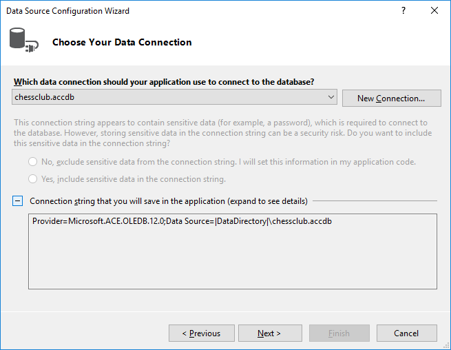

This article shall describe the session to create a Visual Basic project which connects to an Access database via a DataSet object and provides a form with two DataGridViews to work with that database.
This article is not for the faint of heart. It is not ready. Just all facts are thrown unsorted into the bucket. But all ingredients are mentioned, and you can puzzle the picture. I might continue working on it, if someone asks me. Leastways, look into the working Visual Basic procject, which comes with the article.
The used components are:
Provide an Access database file and put it into the Visual Studio project folder.
The database in Access relationships view.
The Access relationships edit dialog box.
To work anything at all in Visual Studio, we need a project. of some type. Here we create a Windows Form project.
The form of the newly created VS VB WinForms project.
Create a DataSet after the receipt on the following MS-Docs article.
MS-Docs article Connect to data in an Access database (Windows Forms) . Note this .
With "View -- DataSources -- Add New DataSource",
you get the DataSource Configuration Wizzard.
After some trivial 'Next' button presses, you will hit the
'Add Connection' dialog, and here press the 'Change' button.
The field 'User name' you can empty, or otherwies appropriately handle.
When choosing the connection, do not choose 'Microsoft Access Database File',
this would be for the old *.mdb files. For the newer *.accdb files,
you need the '.NET Framework Data Provider for OLE DB'
(in a german Visual Studio, that is somehow translated).
Fill in more details.
The wanted path field obviously offers no file browser dialog.
Insert the full path, it will be translated by VS
to the relative path using the macro
|DataDirectory| (?).
With the 'Test Connection' button you can verify your input.

The 'Choose Your Data Connection' tab is filled in now.
You can expand the Connection String box to see
the newly created connection string.
A chapter on it's own is, what exactly '|DataDirectory|' means.
On continuing, the question may appear,
how exactly to handle the database file
on the project build event.
Yes, save the connection string.
The last tab of the DataSource Configuration Wizzard is
'Choose Your Database Objects'. Select the two tables.
Now in the DataSources view, the 'chessclubDataSet'
is available for future use. Interestingly,
the Guardians table appears twice, the second time
as child of Members.
After the DataSet object exists in the project, it can be used by some GUI control, namely by a DataGrid.
.
The DataSet natively does not handle hierarchical table relations, means master-detail relations. Microsoft provides recipes to supplement the wizzard generated code manually, so master-detail relations are handled.
. . .
The hierarchical update in general should be solved now. That works for all databases -- but unfortunately not for MS Access!
(Sorry, this section might repeat already above described facts. Must be sorte out.)
When adding any record, be it master or be it child, that exception is thrown, which we know well in the meanwhile.
The reason is this. When updating a newly inserted master record, before the DataSet can write that back to the database, it must know its primary key. But that is generated automatically by the database, not by the DataSet. Thus, the DataSet sends two SQL statements at once, the first to ask for the key, and the second to send the new record with that key filled in. But with Access, only the first SQL statement is generated, an trouble is ahead. Then attempting to save the child record throws the exception.
This is the hardes part. The solution comes from one class provided by Beth Massi. In his blog Using TableAdapters to Insert Related Data into an MS Access Database he writes :
When Visual Studio generates the insert commands on a SQL-Server
TableAdapter ... When in the DataSet designer, if you look at the
insert statement in the properties window for the SQLTableAdapter
you will see two statements separated by a semi-colon:
Unfortunately Access doesn’t support batch statements. If you look at what
is generated for Access you will only see one statement (also the OLEDB
provider does not support named parameters hence the question mark placeholders):
The steps are
In Access be sure to set AutoNumber.
In VS be sure to set Relation 'Both Relation and Foreign Key Constrains'.
In VS, with other databases, you can see that the code generated for inserting a master record consists of two SQL statements. (I have no such example at hand here.)
Access does not support two statements in one single action. This is the insufficiency, which must be worked around. (See screenshot 20171125°2151 )
Before 'Head over to the code behind', in VS configure the table relation (See screenshots 20171125°2152 and 20171125°2153 )
Make sure that the parent is filled first before the child. In the BindingNavigatorSaveItem click event, code is to be inserted, exactly as we already know it from in the projects before. (See supplemented line 20171125°2201)
In the forms load event, make sure the master table is loaded before the child table. (See modification 20171125°2202)
In the childs DataGridView enter event (GuardiansDataGridView_Enter) make the master tabel end edit (see line 20171125°2204). This event handler was not used by the automatically generated code, and thus has to be newly created.
(Note. This is already done in above Microsoft walkthrough, just in another event handler.)
Just remember: Note that anytime you call EndEdit and flush the data to the DataTable, the row must not fail any constraints either (i.e. if NULLs aren’t being allowed then you have to set those values). One way to handle this is to add code to set default values in the TableNewRow handler on the DataTable.
Above were preparations, below comes the section which Beth Massi introduces with 'Now for the good stuff'.
Right-click on the TableAdapter class in the DataSet Designer and select View Code and the partial class file that you can edit will be created for you. (See screenshots 20171125°2211 and 20171125°2212, it looks not exactly as in Beth Massis blog, perhaps because I rightclicked on the master table TableAdapter .)
For control purposes, I do it again, while rightclicking on the childs TableAdapter (See screenshots 20171125°2214 and 20171125°2215, yes, this resembles Beth Massis code. No new file was created, just chessclub4DataSet.vb supplemented .)
Beth Masse explains: In these classes we can handle the RowUpdated event on the private variable _adapter which gives us access to the ADO.NET DataAdapter that is executing the updates to our rows. The way we retrieve the primary key is by executing the statement SELECT @@IDENTITY which tells Access to send back the last primary key it used on the connection. Because you have to add this handler to all your TableAdapters that are working against MS Access, to make things more manageable you can create a class with a Shared (static) method to handle setting the key and then call that from the handlers.
This is the crucial code, I and probably you could never write on her own right. Small as it is, it can be considered an open source third party product.
Here it follows, with the header a little bit revamped by myself, the code itself completely unchanged. Oops, and the long lines not breaked.
Imports System.Data.OleDb
Public Class AccessIDHelper
''' <summary>
''' This class is to retrieve the primary key autonumber values from Access.
''' </summary>
''' <remarks>
''' Class written by after Beth Massi, see
''' - https://blogs.msdn.microsoft.com/bethmassi/2009/05/14/using-tableadapters-to-insert-related-data-into-an-ms-access-database/
''' - or https://www.facebook.com/note.php?note_id=78517206533
''' [class 20171125°2231]
''' </remarks>
Public Shared Sub SetPrimaryKey(ByVal trans As OleDbTransaction, ByVal e As OleDbRowUpdatedEventArgs)
If e.Status = UpdateStatus.Continue AndAlso e.StatementType = StatementType.Insert Then
' If this is an INSERT operation ...
Dim pk = e.Row.Table.PrimaryKey
' and a primary key column exists ...
If pk IsNot Nothing AndAlso pk.Count = 1 Then
Dim cmdGetIdentity As New OleDbCommand(“SELECT @@IDENTITY”, trans.Connection, trans)
' Execute the post-update query to fetch new @@Identity
e.Row(pk(0)) = CInt(cmdGetIdentity.ExecuteScalar)
e.Row.AcceptChanges()
End If
End If
End Sub
End Class
It looks like the wizzard creates the classes wrongly boxed,
and with a wrong namespace. The private variable _adapter
is not visible. We must fix the namespace.
(The solution was found in Stackoverflow thread
How Can I Expose Private Fields using a Partial Class in VB.NET?
.)
Other interesting pages found while researching this:
(1) Beth Massi's article on facebook, just nicer formatted than on MSDN
Using TableAdapters to Insert Related Data into an MS Access Database
.
(2) Some tutoria on VB-Tips, not sure whether helpful:
TableAdapter: Extend the TableAdapter
.
(3) The Tutorial, where the original poster of Stackoverflow 20171125°2311 thread come from
The definitive TableAdapters + Transactions blog post
.
After fixing the namespace and class boxing issues of the module generated by the DataSet designer does work.
.
The following articles also may be helpful.
MSDN article Walkthrough: Saving Data from Related Data Tables (Hierarchical Update) .
MSDN article
Hierarchical update
.
Read paragraph 'Modify the generated save code to perform the hierarchical update'.
It says e.g.:
The Dataset Designer only adds the BindingSource.EndEdit code
for the first table that's dropped onto the form. Therefore,
you have to add a line of code to call the BindingSource.EndEdit
method for each related table on the form. For this walkthrough,
this means you have to add a call to the OrdersBindingSource.EndEdit
method.
MSDN article TableAdapterManager Overview .
MSDN article How to: Enable and Disable Hierarchical Update .
Also interesting may be a CodeProject article by Gani Weecom Master Detail Datagridview . Just this does not solve the MS Access hierarchical-update-problem.
Here is an MSDN article with a nice overview diagram of the general concept of accessing data via a DataSet: Accessing Data Using Visual Basic . Though it is written for Visual Basic 6.0, I think, it is still valid for Visual Basic 2017.'
MS-Docs article How to: Add Load, Save, and Cancel Buttons to the Windows Forms BindingNavigator Control .
eof
.
{kind=link}
{kind=link}
{kind=link}
{kind=link}
{kind=link}
{kind=link}
{kind=link}
{kind=link}
{kind=link}
{kind=link}
{kind=link}
{kind=link}
{kind=link}
{kind=link}